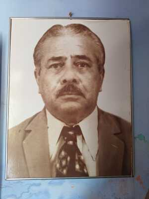
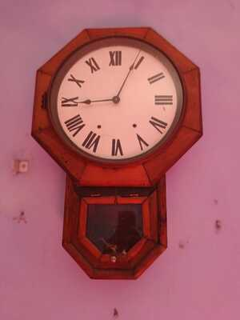
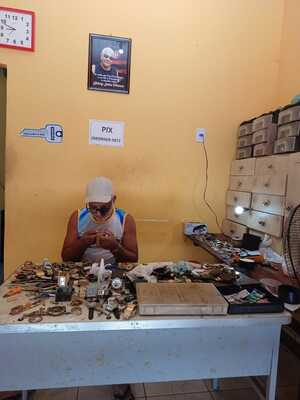

James Cunha/04/07/2023
Quando ainda jovem, nos idos dos anos 70, estudante do Ginásio Celso Magalhães,em Penalva, o meu pai conversou com o então ourives, o Sr. João Amado Nunes Fonseca, para me ensinar o ofício de ourives/relojoeiro.E, aos poucos, fui aprendendo a manusear os laminadores, as ferramentas da oficina,como soldar, consertar relógios, fazer joias, etc. O meu mestre, João Fonseca,além de ourives, foi Vereador em quatro legislaturas, também tendo sido vice-prefeito no segundo mandato do ex-prefeito José Duarte Gonçalves(1983-1988). Lembro-me que, quando em vida, ele tinha como tradição, soltar balão no dia 24 de junho de cada ano , em frente à sua residência.Confira em vídeo publicado neste blog.
Na oficina , porém, fui um discípulo assíduo, mas, não pude concluir o aprendizado, em razão de anos depois, eu ter que partir para São Luís com o objetivo de estudar e trabalhar. Lembro-me das muitas vezes em que derretíamos ouro, o qual ficava tão resplandescente e de uma beleza incomum.Feito isso, o mesmo era colocado na água para esfriar e ser prensado no laminador com o objetivo de ficar maleável ou dúctil, conforme o desejado.
Eu tinha muita curiosidade pelos relógios de algibeira e de parede , pois seus maquinários eram mecânicos e manuais que precisavam de darmos corda todos os dias para girar suas engrenagens.Todavia, esses relógios tinham várias marcas famosas,como: Seiko 5, Cartier, Rolex, Mondaine ,Oriente, Ômega, Lanco, Omodox, Mido, além de outras marcas. A história da Oficina,começou com o Sr. Raimundo Pascoal Fonseca( Mundoca Ourives, pai de Joao Fonseca), na Praça de São Benedito.Era uma casa grande,hoje um terreno vazio em frente ao Posto de Gasolina, tendo como ourives,João Fonseca, Elziney Fonseca,Tanzan, Zeilson,Carlos Leão, Haroldo Cunha,Joca Cunha e outros.O meu pai, Arnaldo Cunha , também aprendeu o ofício e morava na casa das Mendonça, suas tias legítimas no Catumbi.E muitos Netos e bisnetos dos Fonseca, seguiram essa profissão.O Mundoca,era Esotérico, muito conhecido na circunvizinhança de Penalva.Foi um exímio ourives.Ele fazia reuniões espíritas com Edilson Couto, Justo, além de outros que eram filiados no " Círculo Esotérico de São Paulo da Comunhão do Pensamento das Ciências Ocultas."dizia ele me mostrando seus livros, tendo até uma bola de cristal para realização de seus trabalhos secretos e era vidente.
Depois de muitos anos, eles mudaram a oficina para a casa de Joao Fonseca na rua Celso magalhaes e, muito tempo depois, com a morte de do Sr. João Fonseca em 14.08.98, Elziney passou a comandar a oficina até 03.06.2017, quando veio a falecer. Ele era brincalhão, foi um entusiasta componente do bloco Magníficos, fervoroso torcedor do Flamengo e amante de uma boa seresta.
Hoje, a oficina é representada com muita honra e muita dedicação, por Elziney Serra Fonseca Júnior( Júnior de Elziney), na Rua Dr.Djalma Marques, fazendo joias, consertando relógios, fazendo cópias de chaves, venda de relógios,trocando armação de óculos e muitos outros serviços da sua profissão. Fones para contato: (98) 985093871